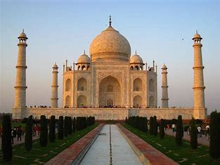
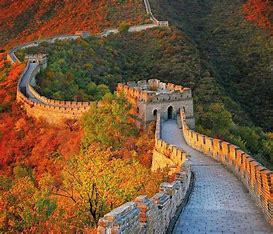
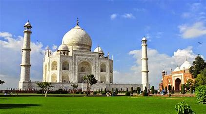
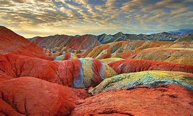
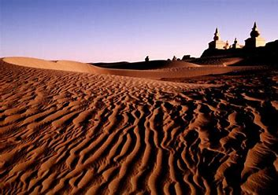
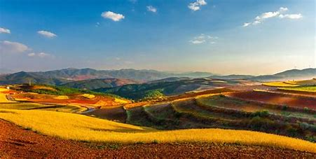

MARAVILLA #1
1. La Gran Muralla China (China)

Una imponente fortificación construida para proteger las fronteras del Imperio Chino.
Se extiende por miles de kilómetros y es conocida por sus torres de vigilancia y murallas de piedra y tierra.
 Ver video en YouTube
Historia de la maravilla:
La Gran Muralla China es una de las estructuras más icónicas y extensas del mundo, con una historia que se remonta a más de 2,000 años. Su construcción comenzó en el siglo VII a.C. bajo las dinastías de los estados combatientes y se extendió y modificó a lo largo de varias dinastías chinas, siendo la Dinastía Ming (1368-1644) la que dejó la mayoría de las secciones visibles hoy en día. La muralla fue construida principalmente para proteger el imperio chino de las invasiones y ataques de los pueblos nómadas del norte, como los mongoles y los xiongnu.
Costumbres y tradiciones:
La Gran Muralla es un símbolo importante de la identidad cultural y nacional china. Es un lugar de orgullo y un testimonio del ingenio y la determinación del pueblo chino. Las tradiciones y costumbres relacionadas con la muralla incluyen festivales y celebraciones que conmemoran su historia, así como actividades como el senderismo y la fotografía, que atraen a turistas de todo el mundo. Además, la muralla a menudo se utiliza como un lugar para eventos de empresas y celebraciones privadas, reflejando su estatus como un importante símbolo cultural. En qué año la declaran maravilla del mundo:
En 2007, la Gran Muralla China fue seleccionada como una de las Nuevas Siete Maravillas del Mundo en una votación global organizada por New7Wonders. Esta selección fue parte de un concurso que buscaba reconocer los logros arquitectónicos más impresionantes y significativos de la humanidad.
Características que influyeron para reconocerla como maravilla del mundo:

Extensión Imponente: La muralla se extiende por más de 21,000 kilómetros, lo que la convierte en la estructura más larga jamás construida por el ser humano.
Ingeniería Avanzada: La construcción de la muralla requirió una ingeniería y planificación sofisticadas, adaptadas a la geografía variada del norte de China, incluyendo montañas, desiertos y llanuras.
Significado Histórico: La muralla es un testimonio de la capacidad de las dinastías chinas para organizar y movilizar recursos masivos para la defensa del imperio.
Impacto Cultural: Además de su función defensiva, la muralla ha desempeñado un papel crucial en la identidad y la cultura china, convirtiéndose en un símbolo duradero de la resistencia y la perseverancia.
  
Ver video en YouTube
Enlace a Página
volver...